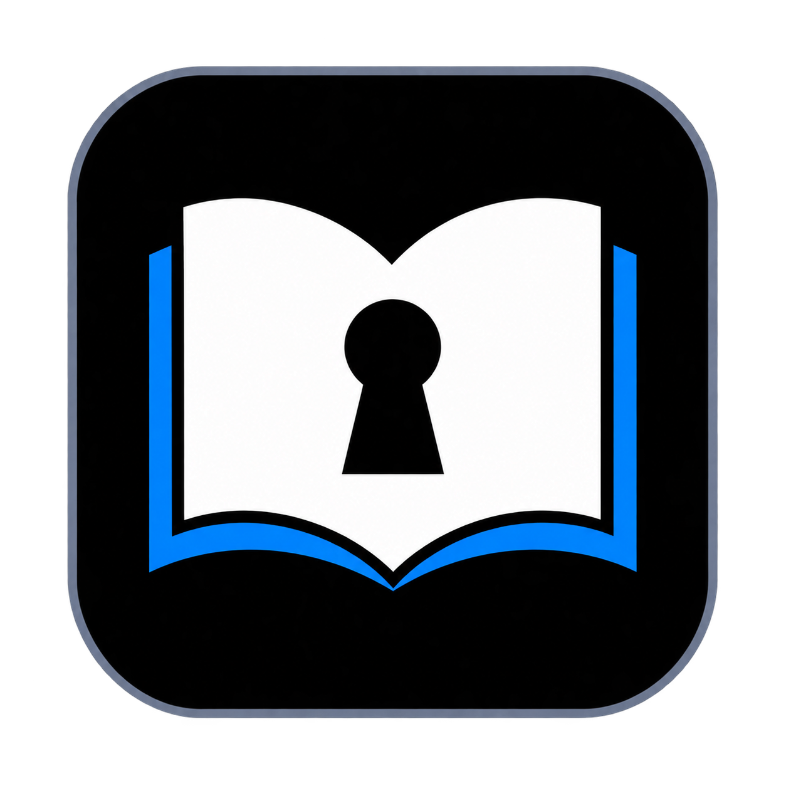

Get the app
Buy through the House of Cauliman page when sales open. $XRP is for the purchase, not for using your vault.

BLΛCKBOOKThe recovery notebook, reimagined for Windows. A familiar place for wallet details, account records, and the notes you can’t afford to lose.
Planned for Windows · Offline vault · USB portability
Designed around the pages of a recovery notebook, with simple controls and room to keep related information together.
Interactive layout preview. Tap a category to explore. This page never accepts or stores recovery information.
Buy through the House of Cauliman page when sales open. $XRP is for the purchase, not for using your vault.
Open the Windows app and set a master password. The planned encrypted vault stores your records locally.
Keep a separate copy of your encrypted vault. Your master password unlocks it; a website or wallet connection does not.
Encryption integration, recovery behavior, and Windows/USB testing must be completed before release. The current prototype is only a dummy-data demonstration.
Purchase access will unlock the Windows download here. Your vault password and recovery information will never belong on this page.
Not available yet
No checkout. No payment request. No download available.No wallet connection is planned inside BLΛCKBOOK. The purchase gate is separate from your offline vault. The exact purchase method is not finalized.
Portability is part of the plan. Windows and removable-drive testing must pass before we claim it is ready.
The planned vault has no password-reset back door. Losing the master password could mean losing access. Backups protect against a lost file, not a forgotten password.
No. This is a design preview. Don’t enter real secrets into the current prototype. Encryption also cannot protect an unlocked vault from malware already on the computer.